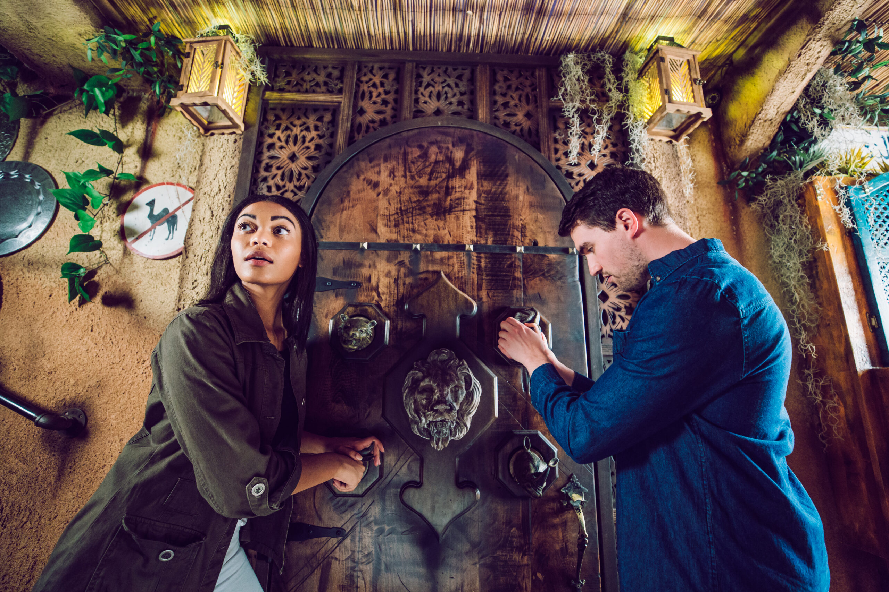
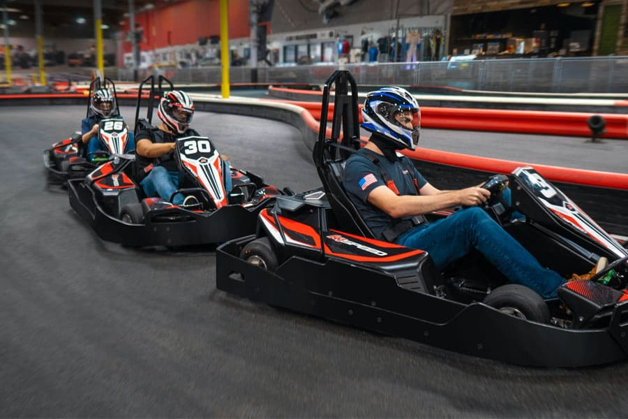
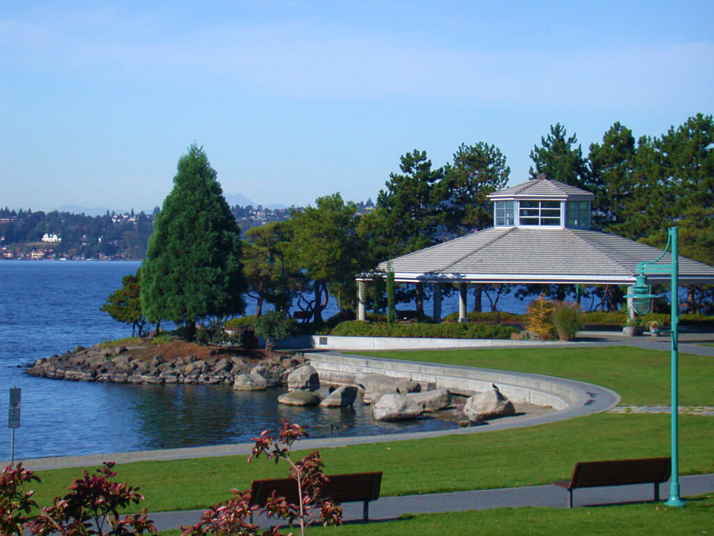
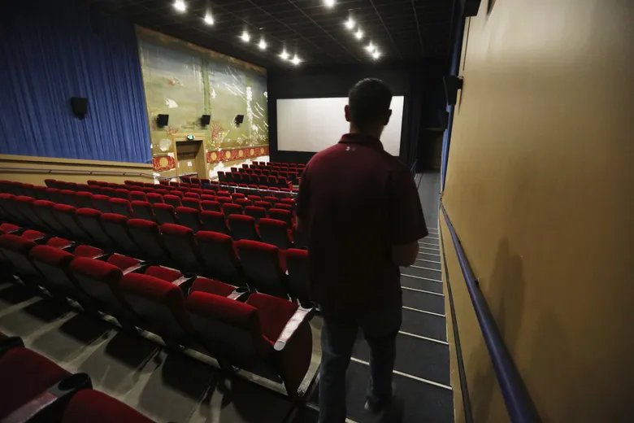
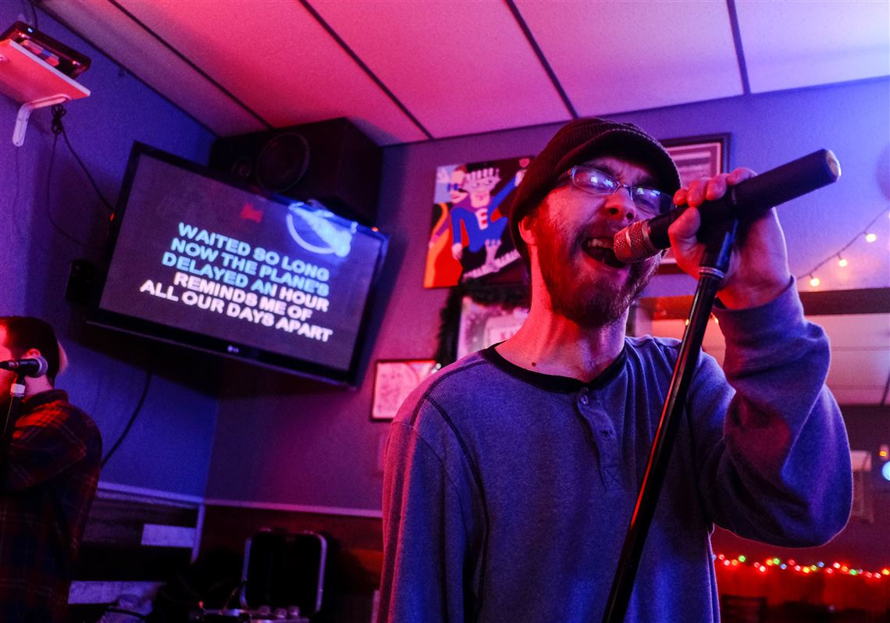
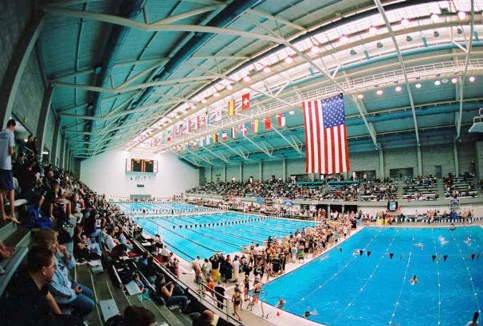

| escape room | go kart racing | Parks |
|---|---|---|
|  |  |  |
| An escape room, also known as an escape game, puzzle room or exit game, is a game in which a team of players discover clues, solve puzzles, and accomplish tasks in one or more rooms in order to accomplish a specific goal in a limited amount of time. The goal is often to escape from the site of the game. Multiple escape rooms are available at the Puzzle Masters Escapes, including Area 51, Book of Secrets, and What Happened in Vegas. Rooms are for 2-8 players and you have 60 minutes to solve the clues to escape. Details for each room range from suspenseful and intellectual to fast-paced and light-hearted. for more information you can watch video down below and see one of their customer's adventure in escape room | While known for being the home of Microsoft and Nintendo of America, Redmond is also home to the premier indoor go-karting destination in the country – K1 Speed! Their Redmond location is located in King County, Washington and is near the Bellevue and Seattle area, and is perfect for corporate functions, company events, and special occasions. their track features a fast straight that will see you reaching top speeds of over 40 miles per hour before entering two twisty sections that promote excellent overtaking opportunities. You’ll love their electric go-karts that deliver instant power, and they are the only kart racing track in Washington State that runs environmentally friendly go-karts! While not racing on the track, refuel at our Pit Café with cold refreshments and warm snacks, or play some rounds of billiards in the Pool Room. | King County is packed with great parks to explore and give kids some room for risky play. The playground can be a wonderful place for kids to run, swing and jump but don’t go to the same park you usually frequent! Mix it up and find new places for outside fun and family entertainment.The City of Kirkland boasts an extraordinary parks system, thanks to long-ago City leaders who had the foresight to plan for parklands along the shores of Lake Washington, thus preserving the space for future generations. It is also thanks to the Kirkland community members of today, whose love for preservation and advocacy for parks has resulted in the City’s ability to not only care for its parks, but consistently enhance and improve them. As a result, Kirkland residents, neighbors and guests can enjoy Kirkland’s diverse waterfront landscape, explore wooded forestlands and experience intimate pockets of creek-side old-growth trees located neatly adjacent to homes and schools. |
| movie theaters | Karaoke | swimming pools |
|---|---|---|
|  |  |  |
| Below is a comprehensive list* of movie theaters in the Seattle-Tacoma area, including independent first-run movie theaters, art film houses and second-run discount movie theaters, major cinema multiplexes, and drive-in theaters in the Puget Sound region. Check this list anytime you’re in the mood to see something on the big screen. We provide insight on their discount prices so you can conserve your entertainment dollars while enjoying a good flick. | Are you ready for your singing debut? Then step on out for karaoke night at any of the karaoke bars in King county. Whether you’re a seasoned singer or just trying something new, there are great spots which let you find your voice and share
good food, great music, and lasting memories. if yoy are in Tacoma and looking for a place to blow off a little steam after work then join your friends at Little Vic’s Midland Tavern. Offering a great selection of games like shuffleboard, pool, and horseshoes, they have karaoke on select nights, too. Friendly bartenders serve up great drinks while you order your food, and this is the perfect place for a girlfriends’ evening out, or a night with the guys. |
Because summer sun can be a rare thing in Seattle, we’ve got lots of amazing swimming pools nearby. If we’re totally honest, these indoor swimming pools offer the coolest water play in town. With everything from lazy rivers, surf machines and twisty slides that end with a splash these family swim spot will keep your kids busy and wear them out for the drive home. It’s easy to make a splash with our picks below. If you need a reason to head north of Seattle, the Lynnwood Recreation Center & Pool is it! This super popular pool includes two big water slides, sprayers, a lazy river, inner tubes, diving boards, water playground, spray fountains and a family hot tub. Plus, there's a lap pool and warm-water therapy pool. Little ones will especially love "Beach Swim" when the shallow play area is open with a water depth up to two feet. If you're thinking this place sounds a lot like Great Wolf Lodge, but a lot closer and a lot cheaper...you're absolutely right! |